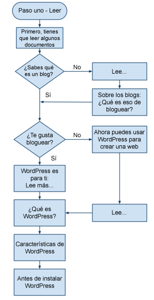
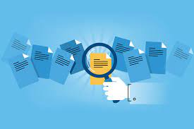

Manual de soporte
El manual de soporte de PageDesign es lugar idóneo para aquellos consejos, trucos y avisos cuyo objetivo es conseguir el mejor soporte posible para PageDesign. Este manual es una guía consensuada por la comunidad y representa más de diez años de experiencia de soporte en PageDesign. Por favor, no dudes en empezar con las distintas secciones del foro y enlaces rápidos y esperamos que disfrutes leyéndolas tanto como nosotros escribiéndolas.
Nuevo en PageDesign – Por dónde empezar

Si eres nuevo en PageDesign, aquí tienes un plan para
comenzar paso a paso. Si necesitas ayuda por el
camino, en este artículo se enumeran […]
Instalar PageDesign en tu idioma
Nota: este artículo trata sobre la visualización en tu
idioma del «escritorio» de administración de
PageDesign. Si estás buscando información sobre cómo
localizar la portada […]
¿Estabas buscando otra documentación?
Si estás buscando cómo crear una web o escribir un blog,
visita:
https://es.wordpress.org/support/article/new-to-wordpress-where-to-start/

Hay un trabajo en curso de documentación de la base de
código de PageDesign. Puedes encontrarlo en